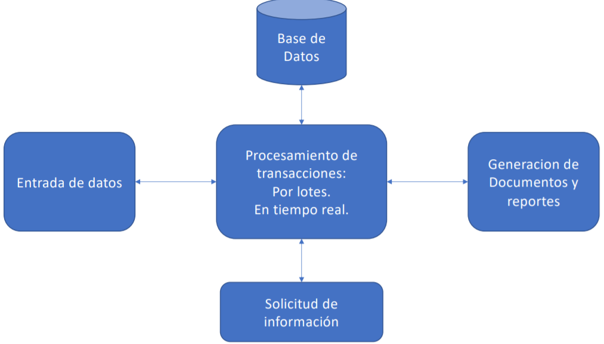

Sistema TPS
Transaction Processing System
Su principal objetivo es llevar el registro de actividades y operaciones
en una empresa evitando su perdida y/o corrupción ante fallos. Por
ejemplo: Depositos en efectivo, pago de recibos, transferencias
monetarias, flujos de producción, registros de empleados, envios,
entre otros, llamados transacciones.
Los TPS permiten consultar el estado de las operaciones en cualquier
momento.
Una transacción es un intercambio de información que es reflejada en
un medio persistente, y debe contar con las
siguientes caracteristicas:
- Atomicidad: Se refiere a que la transacción debe ser completada en su totalidad o
en su defecto debe realizarse una restauración del proceso a su
estado original (antes iniciar la transacción).
- Consistencia: Se debe salvaguardar la integridad de la información cumpliendo
reglas relacionales y de negocio. El sistema debe ser capaz de identificar transacciones que vayan en
contra este principio y debe realizar una operación de roll-back.
- Aislamiento: Cada transacción debe ser considerada independiente de otras
transacciones. Esto permite que el sistema realice transacciones recurrentes y
simultaneas.
- Durabilidad (Persistencia): La transacciones y sus operaciones internas deben ser almacenadas a
un medio persistente, hasta el momento que otra operación o
transacción cambie el estado de los datos. En todo momento las transacciones aisladas pueden ser consultadas.
Arquitectura tradicional de un TPS

Áreas de uso de los TPS:
- Sistemas de inventario.
- Sistemas de producción.
- Sistemas de contabilidad y finanzas.
- Sistemas de recursos humanos.
- Sistemas de ventas.